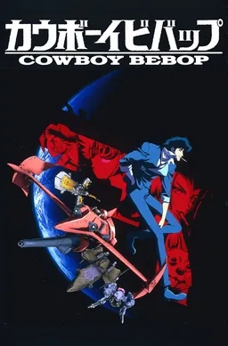

The genetics
Genetics is a background element rather than a central theme. Its clearest example is Ein, a "data dog" whose intellect has been genetically enhanced and who is introduced in "Stray Dog Strut" as the stolen subject of illegal laboratory experiments. Other episodes extend the idea of the human body as raw material for research: in "Pierrot le Fou" the near-invulnerable assassin Mad Pierrot is the survivor of experiments to create a super soldier, in "Jupiter Jazz" Gren was subjected to hormonal experiments while imprisoned, and in "Gateway Shuffle" eco-terrorists threaten to release a virus that turns people into apes. The scientists behind these projects are mostly off screen, working for militaries or unnamed organisations, and the series treats their subjects as victims shaped by others' ambitions. The genetically enhanced dog is a playful idea; the more serious note is the recurring image of people who were experimented on and left damaged, in keeping with the series' melancholy tone.
The story
In 2071, after an accident with a hyperspace gateway has made Earth nearly uninhabitable, humanity lives across the Solar System, and registered bounty hunters, known as "cowboys", pursue criminals for rewards. The series follows the crew of the spaceship Bebop: Spike Spiegel, a former hitman of the Red Dragon crime syndicate; Jet Black, a former police officer; Faye Valentine, an amnesiac con artist; the child hacker Edward; and Ein, a genetically engineered Welsh corgi. Most of its 26 episodes are self-contained cases, while an overarching arc follows Spike's rivalry with his former partner Vicious and his love for Julia, ending in a final confrontation in which Spike kills Vicious and is himself gravely wounded. Several episodes touch on biological experimentation: Ein is stolen from a laboratory that illegally experimented on him, a virus that turns humans into apes appears in another case, and the assassin Mad Pierrot is the product of brutal experiments meant to create a super soldier.